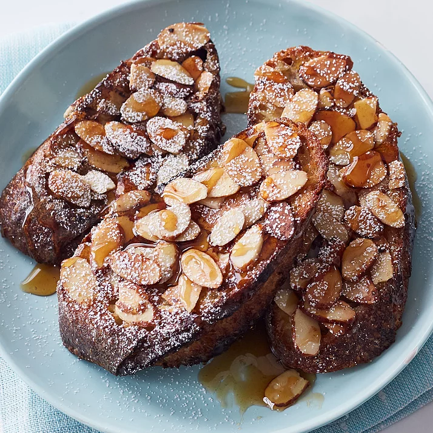

Raspberry Cheesecake Stuffed French Toast

Description
It's hard to beat traditional French toast, but these indulgent recipes certainly
come close. Take the classic breakfast up a notch (or two) by stuffing it with
deliciously sweet fillings like Nutella, jam, or cream cheese. Have a restaurant-worthy
breakfast or brunch in the comfort of your own home with this collection of our best
stuffed French toast recipes.
Ingredients
- 1 cup milk
- 2 tablespoons vanilla extract
- 1 cup white sugar
- 2 tablespoons cinnamon
- 4 eggs, beaten
- 1 cup raspberry puree
- 4 ounces cream cheese, softened
- 1 loaf French bread, cut into 1 inch slices
- Butter
- Confectioners' sugar for dusting
- Nutmeg, for topping
Steps
- In a bowl, whisk milk, vanilla, sugar, and cinnamon into the beaten eggs until well blended.
Set aside
- In a separate bowl, cream together raspberry puree and cream cheese until smooth
- Make 'sandwiches' by cutting each slice of bread in half and spreading raspberry-cheese
mixture in the center, then top with the other half.
- Melt butter over medium heat in a large skillet or griddle.
- Dip bread into egg mixture, coating thoroughly
- Cook until well-browned on both sides, about 5 minutes. Dust with confectioners' sugar
and nutmeg
- Serve immediately